Når det kommer til at designe hjemmesider, så er brugen af de rigtige farver, meget vigtigt. Man smider ikke
bare to farver sammen og siger ”så er den klaret”. Det handler meget mere om psykologien bag farverne, og
hvordan de er med til at hjælpe med at sende de rigtige beskeder til brugeren. Samtidig så har hver farve
forskellig mening, alt efter hvilken person det er der kigger på dem. Det med at vælge farver er derfor ikke
bare lige til, og det er heller ikke noget videnskab, det kommer derimod helt op til den enkelte, og hvordan
de vælger at tage imod den her farve. Dog har man kommet med en general ide over hvordan farverne bliver
opfattet af de fleste mennesker, og samtidig også blevet grundlaget for hvordan man bruger farverne i dag, i
de forskellige designs.
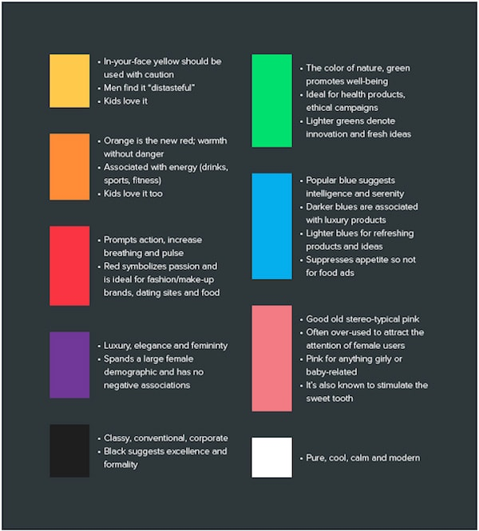
Direkte Link til
farvepsykologi eksempelKilde: Klik her
Et eksempel kunne være at man prøver at designe en hjemmeside rettet mod kvinder, og det er derfor meget
oplagt at vælge en farve som lilla, da den appellere meget til kvinder, og er samtidig hadet af mænd. Her er
et eksempel over de populære brands, og meningen med deres farvevalg:
Direkte Link til
farvepsykologi 2 eksempelKilde: farvelaere.pdf (side 5)
Farvehjulet:
Når der snakkes om farver, og farvepsykologi, så kan man ikke komme udenom at nævne ”farvehjulet”.
Farvehjulets oprindelse var fra 1600-tallet da Isaac Newton påviste at lyset brydes gennem en prisme, og
man
fik mange forskellige farver ud på den anden side af prismen. Eksperimenterne han lavede med prismen,
fik
ham til at konkludere at blå, gul, og rød var de primære farver, da disse farver ikke kunne blandes af
andre
farver. Farvehjulets opbygning er således blevet etableret på den her måde i dag:
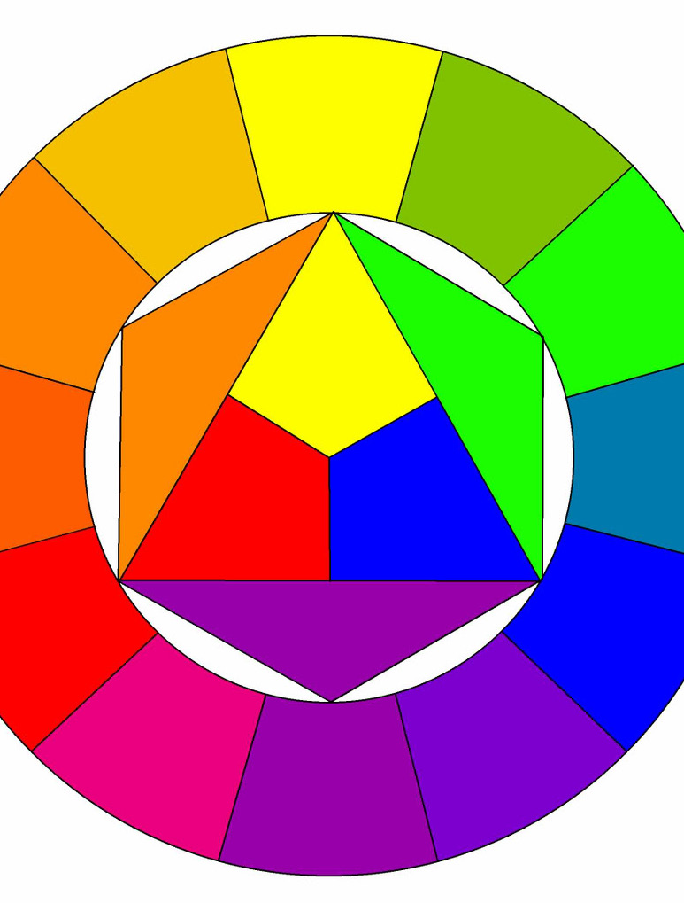
Direkte Link til
farvehjul eksempelKilde: farvelaere.pdf (side 8)
Det er meget vigtigt at nævne, at farvesystemet som vi kender det i dag stadig ikke er absolut, men
bygger
derimod på mange teorier og opfattelser af forskellige mennesker, og kan betyde noget forskelligt
fra kultur
til kultur.
Primære farver: rene farver
Sekundære farver: blandet af to primære farver
Tertiære farver: blandet af én primær og én sekundær farve
Farverum:
Når vi snakker om farver, så er det faktisk tale om to forskellige farvesystemer. Et additivt
farvesystem
(RGB), som står for ”Red, Green, Blue”. Her er der snak om farver som benyttes på
computeren og tv-skærme. Lys bliver tilføjet gennem kombinationen af farver, og kaldes derfor for et
”additivt” farvesystem.
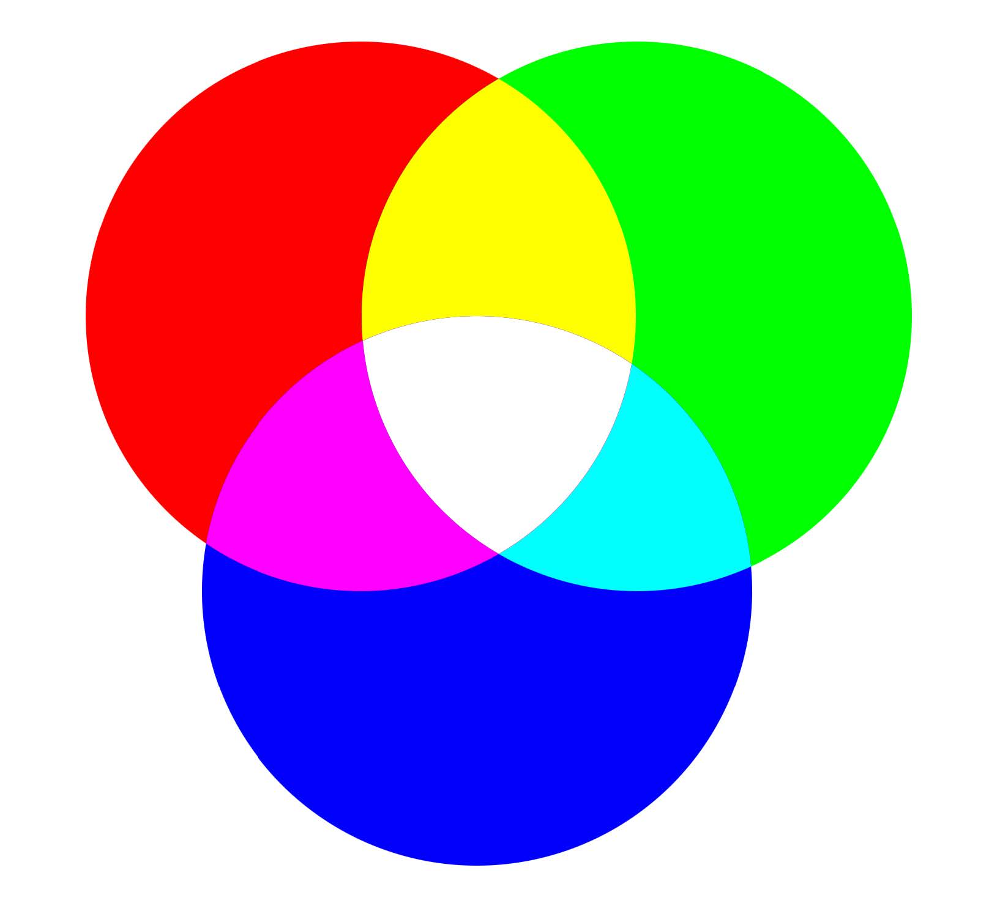
Et subtraktivt farvesystem derimod indeholder farverne (CMYK) som står for ”Cyan”, ”Magenta”,
”Yellow”. Her bliver lyset trukket ud, jo flere af farverne man kombinerer sammen. Disse farver
bliver brugt mest til tryksager.
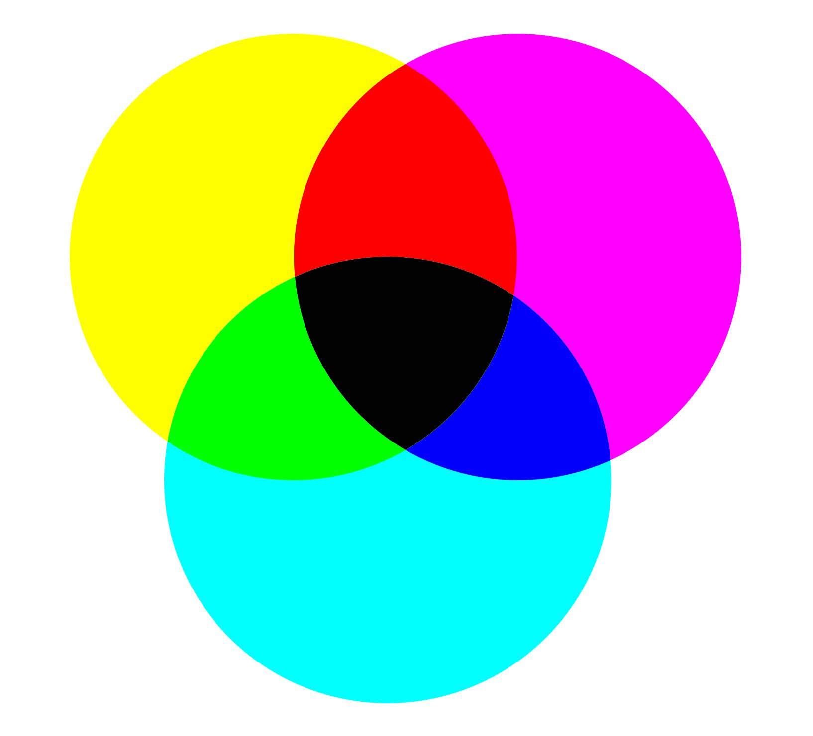
Kulør/HUE: er en graduering eller en variation af en farve
Mætning/Saturation: her snakker man om en kulør som bliver blandet
med forskellige mængder af gråtone. Man kan også sige at farven får sig en ”valør”
Lyshed/Brightness: en farve bliver blandet med ren sort, eller ren
hvid.
Farvesammensætning
Farverne har også en position på farvehjulet, og alt efter deres placering, og brug af dem, så har man valgt
at give de forskellige farvesammensætninger navne.
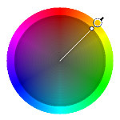
Monokrom: Én kulør.Kilde: farvelaere.pdf (side 12)
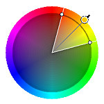
Analog: Farven er indenfor et bredere spektrum, af lysheden og
mætningen.Kilde: farvelaere.pdf (side 12)
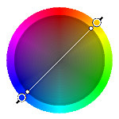
Komplementære: Farver der ligger direkte overfor hinanden på
farvehjulet.Kilde: farvelaere.pdf (side 12)Split komplementære: Farver der ligger direkte overfor hinanden på
farvehjulet.Kilde: farvelaere.pdf (side 12)
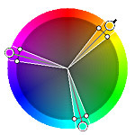
Triader: Tre farver som hver især ligger lige langt væk fra hinanden.Kilde: farvelaere.pdf (side 12)
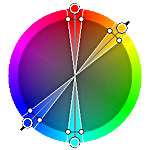
Tetriader (dobbelt komplementære): Fire farver som er komplementære til
hinanden.Kilde: farvelaere.pdf (side 12)
Webdesignerens farvepalette:
Som webdesigner er det meget vigtigt at man gør brug af hele sin farvepalette når man skal designe
hjemmesider. Man skulle gerne på en hjemmeside have brugt RGB farver, farvehjulet til at determinere hvilke
farver der ligger hvor, og dermed hvilke farver der hører sammen, valg af en grundfarve, og valg af en
accentfarve.
 Direkte Link til
farvepsykologi 2 eksempel
Kilde: farvelaere.pdf (side 5)
Direkte Link til
farvepsykologi 2 eksempel
Kilde: farvelaere.pdf (side 5)
 Split komplementære: Farver der ligger direkte overfor hinanden på
farvehjulet.
Kilde: farvelaere.pdf (side 12)
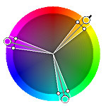
Triader: Tre farver som hver især ligger lige langt væk fra hinanden.
Kilde: farvelaere.pdf (side 12)
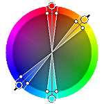
Tetriader (dobbelt komplementære): Fire farver som er komplementære til
hinanden.
Kilde: farvelaere.pdf (side 12)
Split komplementære: Farver der ligger direkte overfor hinanden på
farvehjulet.
Kilde: farvelaere.pdf (side 12)
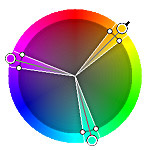
Triader: Tre farver som hver især ligger lige langt væk fra hinanden.
Kilde: farvelaere.pdf (side 12)
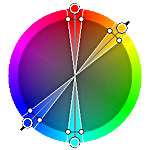
Tetriader (dobbelt komplementære): Fire farver som er komplementære til
hinanden.
Kilde: farvelaere.pdf (side 12)